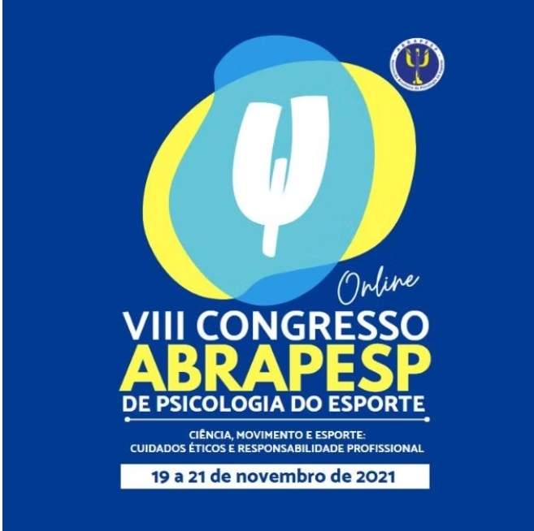
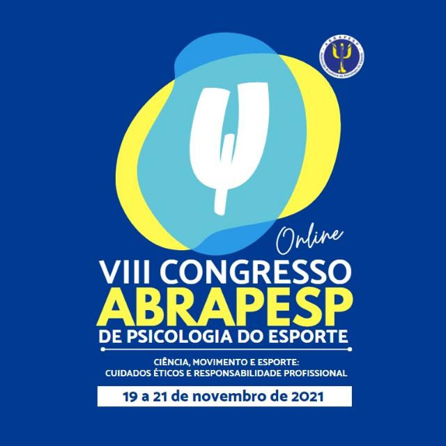

O VIII Congresso da ABRAPESP vem aí, superando as barreiras sanitárias impostas pela pandemia, em versão remota, debatendo os temas emergentes da psicologia do esporte e do exercício físico.
O tema central é a “Ciência, movimento e esporte: cuidados éticos e responsabilidade profissional” e na programação mais de 40 opções de palestras, minicursos, apresentações e atividades reservada aos inscritos.
Para os dias 19, 20 e 21 de novembro, já estão confirmados 69 convidados das mais diversas áreas de atuação, em atividades assim divididas:
3 palestras:
Dia 20/11/2021
14:00 – 14:35 – Espaço Ciência
Possibilidades de pesquisa na área da Psicologia do Esporte
Palestra com Paula Teixeira Fernandes
14:00 – 14:35 – Espaço Extensão
Psicologia, surfe e saúde mental: desafios e resultados do projeto SUrFF Terapia no contexto da pandemia por Covid-19
Palestra com
14:00 – 14:35 – Espaço Prática Psi:
Viver de clínica na Psicologia do Esporte
Palestra Com Maurício Pinto Marques
9 mesas redondas:
19/11/2021
18:30 – 20:00 – Mesa 1
Por que Tóquio 2021? Com Katia Rubio, Ciro Winckler, Juliano Fiori e Rodrigo de Vasconcellos Pieri
20:10 – 21:40 – Mesa Especial 1
Psicologia do Esporte em Tóquio – Jogos Olímpicos Com Rodrigo de Vasconcellos Pieri, Marisa Markunas, Ana Carolina Covas e Carla Di Pierro.
20:10 – 21:40 – Mesa Especial 2
Psicologia do Esporte em Tóquio: Jogos Paralímpicos Com Erika Hofling Epiphanio, Bruna Bardella de R. M. Soares, Maria Cristina Nunes Miguel e Fabrízio Veloso Rodrigues.
20/11/2021
08:30 – 10:00 – Mesa 2
Cultura e movimento: o cuidado na pesquisa em Psicologia do Esporte Com Cristiano Roque Antunes Barreira, Thabata Castelo Branco Telles, Fábio José Cardias-Gomes e Pedro Henrique Martins Valério
08:30 – 10:00 – Mesa 3
Maternidade e esporte Com Lívia Gomes Viana-Meireles, Erika Hofling Epiphanio, Firmino Neto e Juliana Camilo.
21/11/2021
14:30 – 16:00 – Mesa 4
Criança, atividade física e pandemia Com Lívia Gomes Viana-Meireles, Rossana Pugliese, Cristina Costa Lobo e Mariana Simões Pimentel Gomes
14:30 – 16:00 – Mesa 5
Aspectos da dor em atletas profissionais: do movimento aos aspectos emocionais
Com Pedro Angrisani, Gabriela Gonçalves, Marina Cecchini e Natália M. Guardieiro,
19:00 – 21:30 – Mesa 6
Psicologia do Esporte em modalidades de força
Com Thabata Castelo Branco Telles, Daniela Seda, Maurício Pinto Marques e Lucas Lara
19:00 – 20:30 – Mesa 7
Saúde mental e esporte em tempos de pandemia: o papel da Psicologia do Esporte
Com Marta Magalhães, Marina Gusson, Matheus Vasconcelos Torres e Marisa Markunas.
4 mini cursos ou workshops:
21/11/2021
08:30 – 10:30 – Workshop 1
Psicologia do Esporte no ambiente escolar
Com Alexandre Conttato Colagrai, Cássio José de Almeida e Hélio Mamoru Yoshida
08:30 – 10:30 – Workshop 2
Adaptações durante a pandemia no mundo acadêmico
Com Alexandre Slowetsky Amaro, Kaio Borges Guerrero e Fernanda Tartalha Nascimento
08:30 – 10:30 – Workshop 3
Esporte paralímpico na visão interdisciplinar
Com Thaís Sporkens Magna e Leonardo Cavalheiro Scarpato
08:30 – 10:30 – Workshop 4
O esporte, suas histórias e imagens arquetípicas
Com Cristiano Roque Antunes Barreira, Rodrigo de Vasconcellos Pieri e Bráulio Eloi de Almeida Porto
5 oficinas:
21/11/2021
08:30 – 10:30 Oficina 1:
Corpo e circo – Com Marcela Laino
08:30 – 10:30 Oficina 2:
Arteterapia no contexto esportivo
08:30 – 10:30 Oficina 3:
Saúde mental e corporeidade: práticas corporais no cuidado existencial – com Erika Hofling Epiphanio, Telma Sara Q. Matos, Marcelo Augusto Longo Rodrigues e Rodrigo Salomão
08:30 – 10:30 Oficina 4:
O acesso fenomenológico às experiências vividas em práticas esportivas e corporais – Com Pedro Henrique Martins Valério
08:30 – 10:30 Oficina 5:
O esporte como ferramenta terapêutica para crianças diagnosticadas com o transtorno do espectro autista – TEA Com Rodrigo Almeida Damasceno e Antonio Cesar Soromenho Santos de Oliveira
jornadas de apresentação de trabalhos:
Podemos ter até 3 jornadas, dependendo dos trabalhos.
12 rodas de conversa ou encontros temáticos:
20/11/2021
10:15 – 12:00 Encontro Temático 1:
O ensino da Psicologia do Esporte em cursos de graduação em Psicologia e Educação Física – o que temos usado como referência
Com Telma Sara Q. Matos, Cristianne A. Carvalho e Léo Barbosa Nepomuceno,
10:15 – 12:00 Encontro Temático 2:
Psicologia do Esporte e abordagem centrada no atleta
Com Erika Hofling Epiphanio, Matheus Vasconcelos Torres e Avelino Ribeiro de Castro
10:15 – 12:00 Encontro Temático 3:
Psicometria aplicada ao esporte e exercício físico
Com Evandro Morais Peixoto, Alberto Filgueiras e Camila Cristina Fonseca Bicalho
10:15 – 12:00 Encontro Temático 4: A CONFIRMAR
Com
10:15 – 12:00 Encontro Temático 5:
Psicologia do Esporte na américa do sul: futebol feminino
Com Luciana Angelo, Marina Gusson, Maria Noel Givogre e Alejandra Blasco Ron
10:15 – 12:00 Encontro Temático 6:
Diversidade nos ESports
Com Marta Minopoli, Yan Cintra e Danielle Ghirotti Coelho
10:15 – 12:00 Encontro Temático 7:
O papel da prática da atividade física e do desporto durante os confinamentos associados à Covid-19
Com
10:15 – 12:00 Encontro Temático 8:
Motivação ao exercício físico e imagem corporal positiva
Com Marsuelanea Limeira da Silva, Marina Pereira Gonçalves e Aline Feitosa Sampaio
10:15 – 12:00 Encontro Temático 9:
O corpo controlado e o esporte: dos papéis sociais aos testes de verificação de gênero.
Com Adriana Bernardes Pereira, Julio Cezar Fetter e Waleska Vigo Francisco.
10:15 – 12:00 Encontro Temático 10:
Pesquisa empírica em fenomenologia: experiências iniciais no trajeto da investigação qualitativa de práticas corporais de mediação
Com Cristiano Roque Antunes Barreira, Fabiana Martins e Thais Petroni Rocha Lima Silva
18:00 – 20:00 Encontro Temático 11:
Momento Esporte – Paraciclismo: avanços e perspectivas
Com
18:00 – 20:00 Encontro Temático 12:
Momento Esporte – Paradesporto no Vale do São Francisco
Com
4 intervalos especiais:
19/11/2021
Das 20:00 às 20:10 – Lançamento Corredores Virtuais Da ABRAPESP
20/11/2021
Das 10:00 às 10:15 – Intervalo com movimento
Das 17:00 às 18:00 – Intervalo Cultural
21/11/2021
Das 18:15 às 18:30 – Prática de Yoga
Além da abertura do evento no dia 19/11/2021 das 18 às 18:30
e da assembléia dos associados no dia 21/11/21 às 13:00
Já fez sua inscrição? Clique aqui
Associados: atualize seus cadastro no site da ABRAPESP, assim como sua anuidade